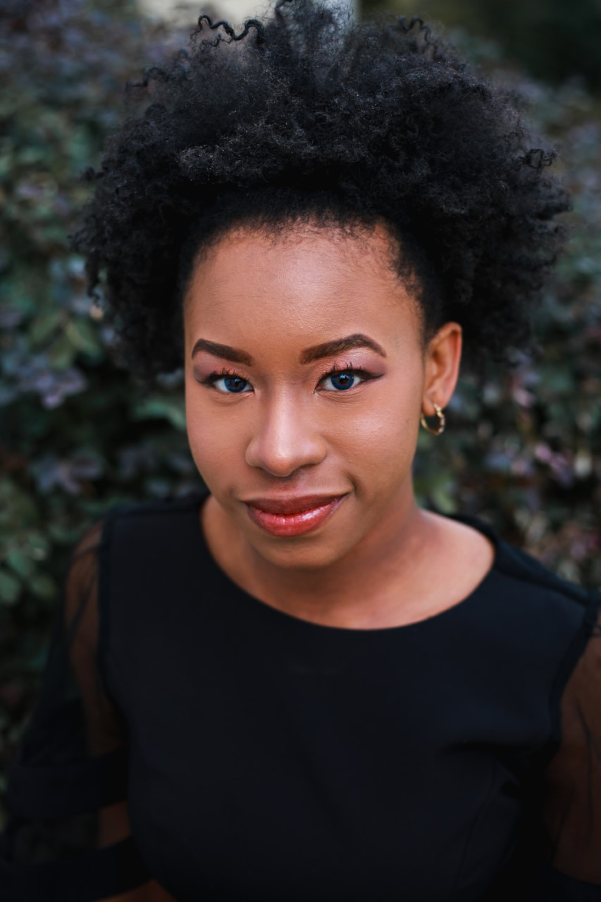

Myah Rose Paden
Classical Vocalist | Podcast Producer | Social Media Specialist
About Me
Myah Rose Paden is a multifaceted and versatile Administration and Research Assistant from Georgia. Myah is dedicated to diversifying her skillset through office administration, SEO training, social media managing, and research. She is passionate about collaboration and new ideas, and she thrives in fast-paced environments which allow for full utilization of her acquired skillset and pliable nature. Currently (Feb 2021), Myah is in the process of completing Google Analytics, FutureLearn Accenture Digital Marketing and Social Media, and Coursera University of Michigan HTML5 certifications in an effort to move further into the SEO and digital marketing fields where her creative and technical talents may be fully realized.
Myah is a graduate of the University of Georgia with her Bachelor of Music in Vocal Performance (2019), and she matriculated to the University of Michigan in Fall 2019 to study with Dr. Louise Toppin in pursuit of her Masters degree in Performance as well as to assist Dr. Toppin on the African Diaspora Music Project research databases and work as a Course Development Assistant for U-M's inaugural Massive Open Online Course, "Black Performance as Social Protest".
In her downtime, Myah enjoys hosting, producing, and editing the personal journal/culture podcast, Thorn & Thistle from her home studio.